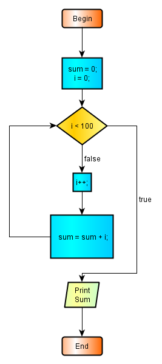
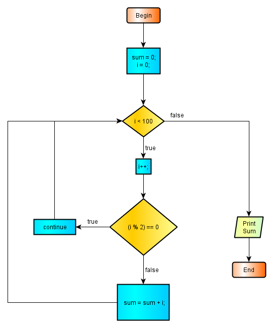
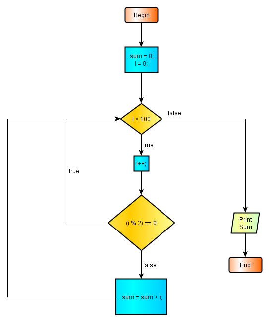
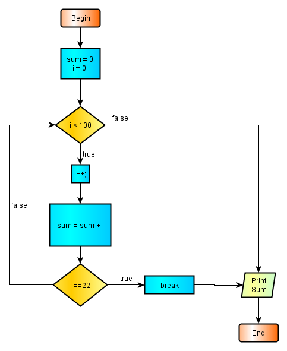

2.8 - Repetitive Structures
Some fragments of the program may be repeated until a condition is satisfied. Repetitive tasks are activities which differentiates computers from pocket calculators. Large amount of information may be processed via repetitive operations. Two repetive methods are applied in the computer languages:
- Recursive Methods
- Iterative Methods
Recursive methods consist a program fragment repetitevely calling itself. We will consider recursive programs after having some knowledge about classes and methods. Recursive methods are special methods and they are seldom applied.
Iterative methods consist of repeating some code fragments until a condition is satisfied. These are called more conveniently as loops. Loops are most frequently applied form of repetitive methods. Also they are more straightforward and easy to apply.
Java has many forms of loops to suit all the looping needs. We will psesent all of them here and we will introduce looping terms while studying different loop constructs.
2.8.1 - While Loops
The while loops are perhaps the most general of the loops. The structure of thewhile loops is as follows :
while (boolean-expression) { body of the loop }
The key point here is the boolean expression which controls the execution of the loop. This boolean expression is called test condition, or loop sentinel. Loop sentinel must carefully crafted so in any of the iterations, the loop may have way to exit. Otherwise, we will be dropped in a an endless loop which will never terminates and possibly crash the running program if not the entire operating system. Every programming novice will make an endless loop mistake at least once, like the writer of these lines. Let us try a while loop by calculating the sum of the first 100 integers and explore more loop terminology.
First we will make a flowchart of the program:

2.8.1 image - 1 : while loop
Here is the program:
package preliminary; public class WhileLoop { public static void main(String[] args){ int i = 0; int sum = 0; while (i < 100) { i++; sum = sum + i; } // end while System.out.println("The Sum Of The First 100 integers is : " + sum); } // end main } //end class WhileLoop
The result of this program :
The Sum Of The First 100 integers is : 5050
In the example above, the loop sentinel is the boolean expression (i < 100). This expression will yield true for any value of i less than 100. In this case the body of the loop will be executed. When i will be equal to 100 the value of the loop sentinel will turn to false and the program control will not enter to the loop and jump to the next statement succeeding the loop statement. We can see here that in the while loops, the loop sentinel is controlled before the program control has entered to the loop body. We say that in the while loops loop control is checked in the beginning of the loop. In that, if the loop sentinel will not result to the expected value, the loop will never be executed at all.
The variable i is the loop counter or the loop index in other words. Loop counters are integer variables denoted by i , j , k , l , m , n according to the tradition applied till FORTRAN times. We may use any other identifier to name a loop counter, but this will be very difficult to follow for the people who will read the program listing. So, be gentle and stick to the tradition, by this we have nothing to loose but to enhance the readability in virtue of the familiarity.
When the value of the loop counter is 99, the value of the loop sentinel is still true and the the program pointer will enter to the body of the loop once again. In this iteration, first the value of the program counter i will be augmented by one and reach to 100, so by leaving the iteration the value of the loop counter will reach to 100 and when checked again the value of the loop sentinel will result to falseresulting the while loop will never be executed again.
Very simple in fact. All the applications needing a loop structure may be handled exclusively with the while loops.
Sometimes, it may be possible to be in the necessity to skip some iteration. We can use the continue statement for this purpose. This statement takes no parameters and has the effect of simply leaving the present iteration to continue with the next one. For example we may want to calculate the sum of the first 100 odd integers. There is the flowchart :

2.8.1 Image - 2 : While Loop With continue Statement
Here is the program :
package preliminary; public class WhileLoopWithContinue { public static void main(String[] args){ int i = 0; int sum = 0; while (i < 100) { i++; if ((i % 2) == 0) { continue; } // end if sum = sum + i; } // end while System.out.println("The Sum Of The First 100 odd integers is : " + sum); } // end main } //end class WhileLoopWithContinue
The result of this program :
The Sum Of The First even integers is : 2500
You may try yourself for the sum of first 100 even numbers. All you have to do is to change the control expression of the inner if statement.
The program above may be realised also without the need of using continue statement. The flowchart and the program is given below:

2.8.1 Image - 3 : While Loop Without continue Statement
Here is the program :
package preliminary; public class WhileLoopWithoutContinue { public static void main(String[] args){ int i = 0; int sum = 0; while (i < 100) { i++; if (!(i % 2) == 0)) { sum = sum + i; } // end if } // end while System.out.println("The Sum Of The First 100 odd integers is : " + sum); } // end main } //end class WhileLoopWithoutContinue
The result of this program :
The Sum Of The First odd 100 integers is : 2500
Using the versions with or without continue statement is a persoanal choice,but it may be advisable to use the one with continue for the sake of clarity.
In some situation we may want to stop the execution of the loop in some iteration and transfer the program control to the statement next to the loop. For this task we can use break statement. The flowchart and program is at below:

2.8.1 - Image - 4 : Exiting From A Loop By A break Statement
If we follow from the flowchart above, there is an if block inside the while loop. If the control of the if statement becomes true, the program flow control enters to the body of this if block and here, only a break staement is present and by its execution, the actual iteration is terminated, the rest of the loop is skipped and the program flow control is tranfered to the statement next to the while block. Here is the program:
package preliminary; public class Break { public static void main(String[] args){ int i = 0; int sum = 0; while (i < 100) { i++; sum = sum + i; if (i== 22) { break; } // end if } // end while System.out.println("The Sum Of The First 22 integers is : " + sum); } // end main } //end class Break
The result of this program :
The Sum Of The First 22 integers is : 253